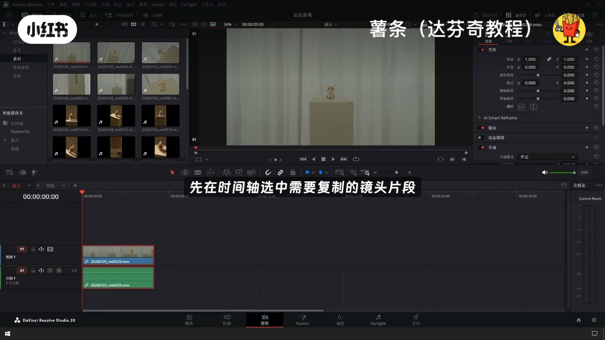
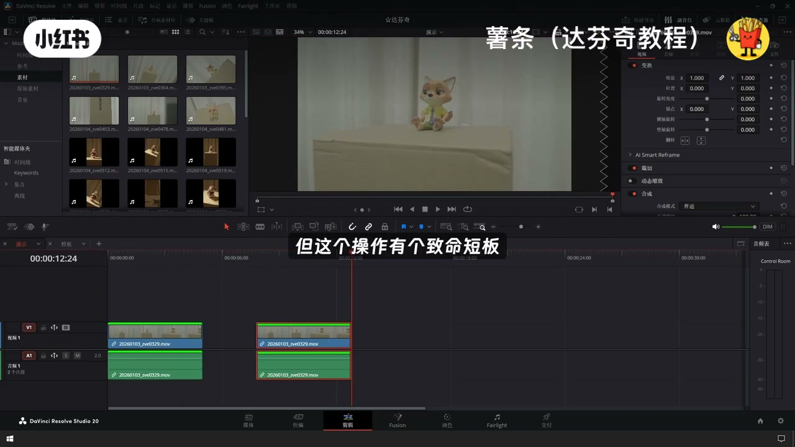
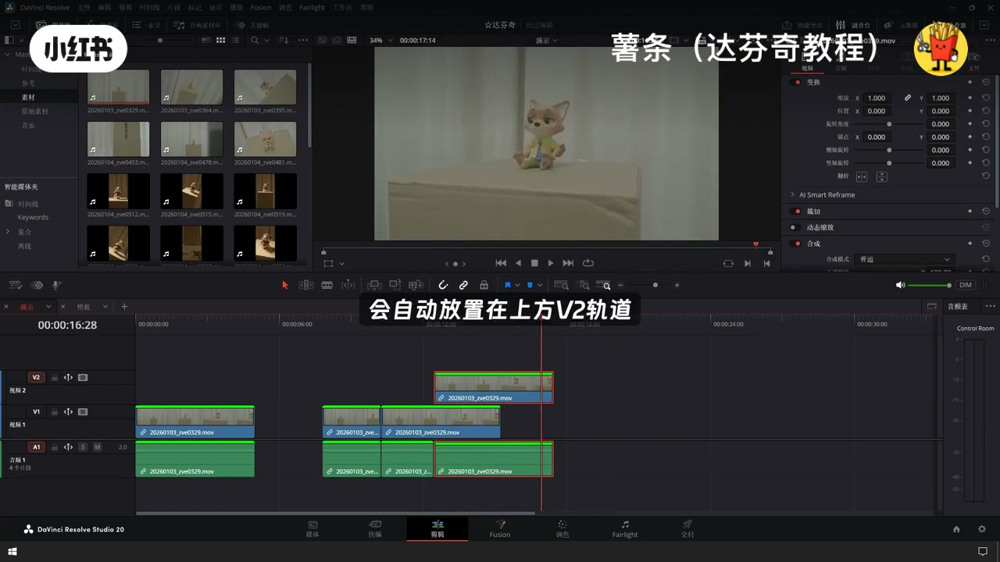
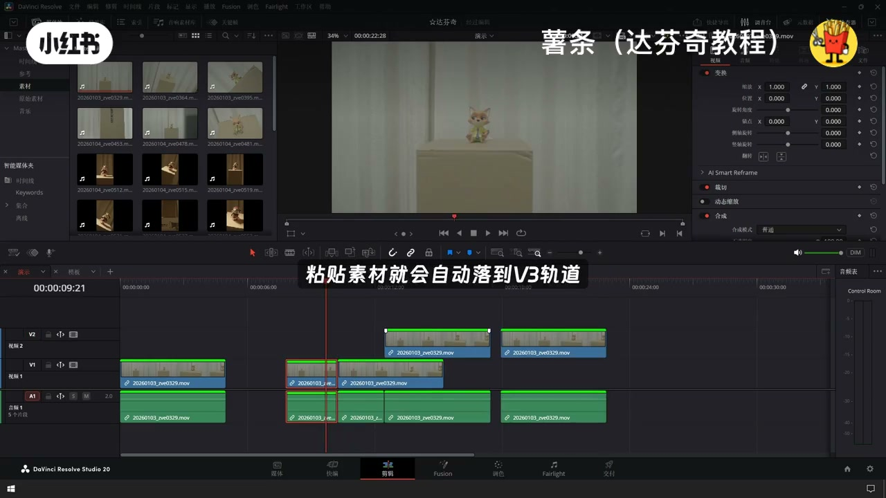
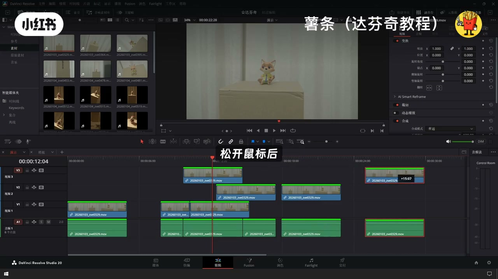
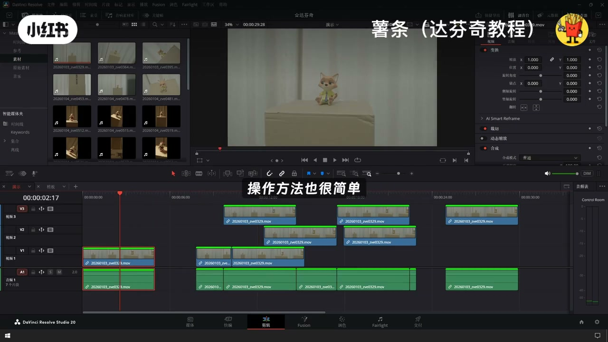
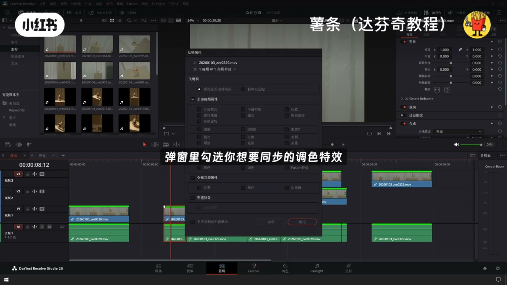

内容要点
「达芬奇剪辑操作复制粘贴快捷键技巧」教程要点：分享达芬奇里面三个复制操作的技巧 → 先讲通用复制粘贴操作 → 现在时间轴选中需要复制的镜头片段 → 按下ctrl加c完成复制…
知识结构
分享达芬奇里面三个复制操作的技巧
V1前方带有红色选中标记
用鼠标拖动目标片段
- 分享达芬奇里面三个复制操作的技巧
- 先讲通用复制粘贴操作
- 现在时间轴选中需要复制的镜头片段
- 按下ctrl加c完成复制
- 移动播放指针到想要放置素材的位置
分享达芬奇里面三个复制操作的技巧
00:00–00:31分享达芬奇里面三个复制操作的技巧
分享达芬奇里面三个复制操作的技巧；先讲通用复制粘贴操作；现在时间轴选中需要复制的镜头片段；按下ctrl加c完成复制；移动播放指针到想要放置素材的位置；扛着架V就能粘贴出复制素材；但这个操作有个致命短板；原素材放在V1轨道；粘贴生成的素材会默认同轨道摆放；要是V1轨道原本存有画面；新粘贴的素材会直接覆盖原有镜头；教大家一个解决办法；看时间线左侧的轨道标识


00:30–00:59V1前方带有红色选中标记
V1前方带有红色选中标记；点击取消这个红色选框；此时再直性粘贴；复制出来的素材会自动放置在上方V2轨道；底层V1所有画面完整保留；不会产生任何遮挡覆盖；这个逻辑可以通用；取消V2轨道的红色选中框；粘贴素材就会自动落到V3轨道；每层轨道都能灵活切换；除了快捷键复制；近距离复用素材还有更便捷的方式；长按键盘Alt键

00:57–01:26用鼠标拖动目标片段
用鼠标拖动目标片段；松开鼠标后就能直接生成一份复制素材；近距离重复镜头用这个方法效率更高；很多人还需要单独复制调色动画参数；不用连带原画面一起复制；操作方法也很简单；选中带有各类效果的原始片段；CTRL加C复制；随后选中需要套用同款参数的其他素材；按下Alt加V；弹窗里勾选你想要同步的调色；特效、关键帧等属性；确认后就能一键同步所有参数




口述/画面要点（39段）
结合 Whisper medium 与画面大字整理；专有名词已校对。
分享达芬奇里面三个复制操作的技巧
先讲通用复制粘贴操作
现在时间轴选中需要复制的镜头片段
按下ctrl加c完成复制
移动播放指针到想要放置素材的位置
扛着架V就能粘贴出复制素材
但这个操作有个致命短板
原素材放在V1轨道
粘贴生成的素材会默认同轨道摆放
要是V1轨道原本存有画面
新粘贴的素材会直接覆盖原有镜头
教大家一个解决办法
看时间线左侧的轨道标识
V1前方带有红色选中标记
点击取消这个红色选框
此时再直性粘贴
复制出来的素材会自动放置在上方V2轨道
底层V1所有画面完整保留
不会产生任何遮挡覆盖
这个逻辑可以通用
取消V2轨道的红色选中框
粘贴素材就会自动落到V3轨道
每层轨道都能灵活切换
除了快捷键复制
近距离复用素材还有更便捷的方式
长按键盘Alt键
用鼠标拖动目标片段
松开鼠标后就能直接生成一份复制素材
近距离重复镜头用这个方法效率更高
很多人还需要单独复制调色动画参数
不用连带原画面一起复制
操作方法也很简单
选中带有各类效果的原始片段
CTRL加C复制
随后选中需要套用同款参数的其他素材
按下Alt加V
弹窗里勾选你想要同步的调色
特效、关键帧等属性
确认后就能一键同步所有参数